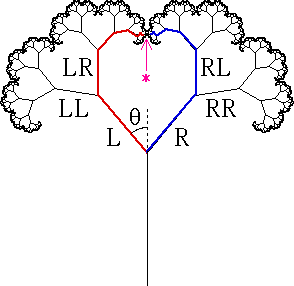

|  |
In the obvious way, each branch is determined by a string of symbols L and R specifying the choice of direction taken along the tree to reach the branch.
A branch determined by a string of n symbols has length rn; a branch tip is determined by an infinite string of symbols.
Most of the analysis results from converting eventually periodic symbol strings of branch tips into geometric series for the x and y coordinates of the branch tips, and making appropriate interpretations.
Pictured above is a q = 40 tree.
A tree is called self-contacting if the tips of some left branches coincide with the tips of some right branches, but no tip coincides with any non-tip point of the tree.
The q = 40 tree pictured here is a self-contacting tree.
Return to definitions of fractal trees.